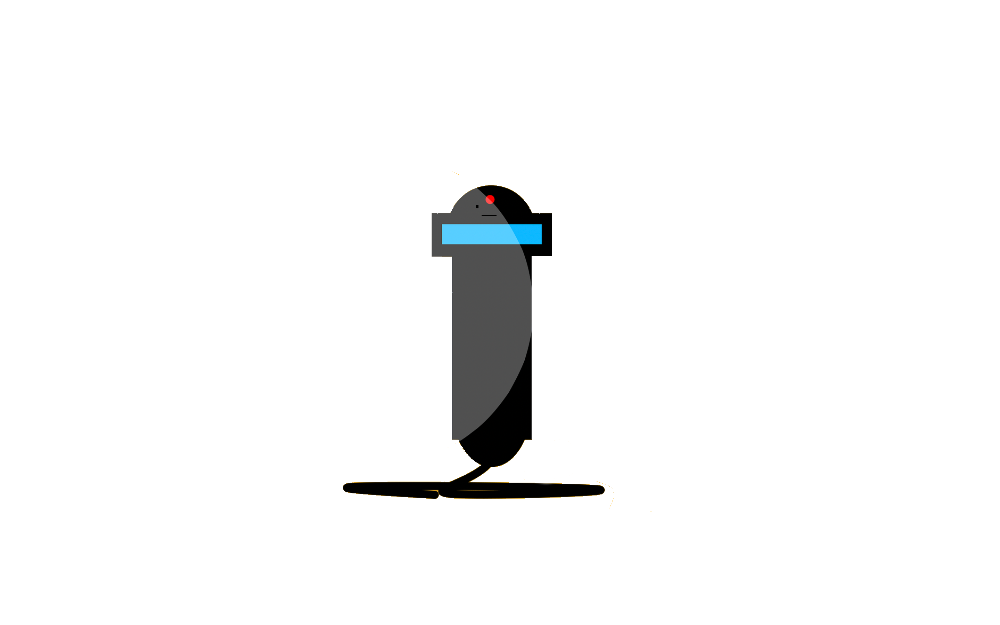
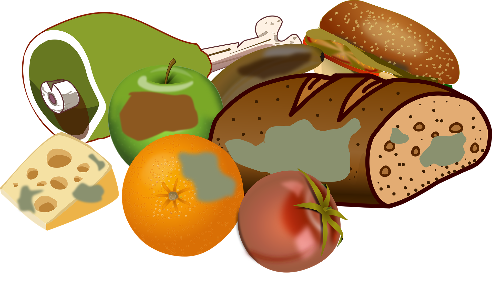

Features
Ripe or raw, this revolutionary kitchten tool
will indicate what to do with your food depending on its state.
Our alogrithm is accurate to a millionth of a percentile
no matter the food, colour, or the shape!

COOKED
Our revolutionary technology incorporates
nanotech, thermal, and pH sensors to
detect different stages of food:
- Detects if meat is:
raw, slightly undercooked, perfectly cooked, or overly cooked
- Warns user if meet is spoiled
- Suggests recipes to user of what food
to make depending on the status of the food
